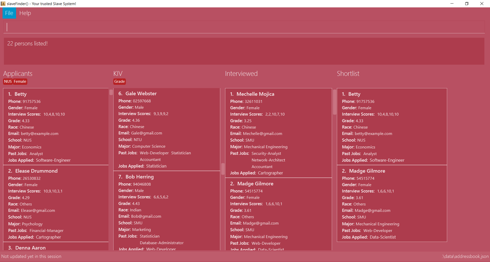

By: Team 15-3 Since: Feb 2019 Licence: MIT
1. Introduction
slaveFinder() is a resume management software for those who prefer to use a desktop app for managing contacts. More importantly, slaveFinder() is optimized for those who prefer to work with a Command Line Interface (CLI) while still having the benefits of a Graphical User Interface (GUI). If you can type fast, slaveFinder() can get your resume management tasks done faster than traditional GUI apps. Interested? Jump to the Section 2, “Quick Start” to get started. Enjoy!
2. Quick Start
-
Ensure you have Java version
9or later installed in your Computer. -
Download the latest
addressbook.jarhere. -
Copy the file to the folder you want to use as the home folder for your Address Book.
-
Double-click the file to start the app. The GUI should appear in a few seconds.
 -
The GUI should start with some data preloaded to allow easier trying out of system
-
Type the command
clearto start with an empty addressbook instead. -
Type the command in the command box and press Enter to execute it.
e.g. typinghelpand pressing Enter will open the help window. -
Some example commands you can try:
-
list: lists all applicants and job openings -
clear: clears the software of all applicants and job openings -
exit: exits the app
-
-
Refer to Section 3, “Features” for details of each command.
3. Features
Command Format
-
Words in
UPPER_CASEare the parameters to be supplied by the user e.g. inadd n/NAME,NAMEis a parameter which can be used asadd n/John Doe. -
Items in square brackets are optional e.g
n/NAME [pj/PASTJOB]can be used asn/John Doe pj/Software-Engineeror asn/John Doe. -
Items with
… after them can be used multiple times including zero times e.g.[pj/PASTJOB]…can be used aspj/Software-Engineer,pj/Software-Engineer pj/Web-Developeretc. -
Parameters can be in any order e.g. if the command specifies
n/NAME p/PHONE_NUMBER,p/PHONE_NUMBER n/NAMEis also acceptable.
3.1. Basic Command
3.1.1. Viewing help : help
Format: help
3.1.2. Adding a person: add
Viet Phone: 86128655 Email: pdnm@cp.com Nric: S0129574R Gender: Male Race: Others Address: 123 Disney School: NUS Major: Computer Science Grade: 5.00 Interview Scores: No Record Past jobs: Known Programming Languag
Adds a person to the address book
Format: add n/NAME p/PHONE_NUMBER nric/NRIC e/EMAIL a/ADDRESS g/GENDER r/RACE m/MAJOR s/SCHOOL gr/GRADE j/JOBS_APPLY
Examples:
-
add n/John p/91757536 nric/S8761230Q e/john@example.com a/123 Disneyland g/Male r/Malay m/Psychology s/NUS gr/4.33 j/Manager -
add n/Betty p/123 nric/S4444455Y e/betty@bet.com a/321 USS g/Female r/Others m/Life Science s/NTU gr/0.44 j/Helper is/1,2,1,10,5 kpl/Java pj/Chief-Executive-Officer
3.1.3. Listing all persons : list
Shows a list of all job openings and applicants in the slave system.
Format: list
-
Useful after using filter/displayJob which shows a subset of the list.
3.1.4. Editing a person : edit
Edits an existing person in the address book.
Format: edit INDEX n/NAME p/PHONE_NUMBER nric/NRIC e/EMAIL a/ADDRESS g/GENDER r/RACE m/MAJOR s/SCHOOL gr/GRADE j/JOBS_APPLY
Examples:
-
edit 1 p/91234567 e/johndoe@example.com
Edits the phone number and email address of the 1st person to be91234567andjohndoe@example.comrespectively. -
edit 2 n/Betsy Crowerpj/Manager
Edits the name of the 2nd person to beBetsy Crowerand clears all existing past jobs and replace it with 'Manager". ==== Listing entered commands :history
Lists all the commands that you have entered in reverse chronological order.
Format: history
|
Pressing the ↑ and ↓ arrows will display the previous and next input respectively in the command box. |
3.1.5. Undoing previous command : undo
Restores the address book to the state before the previous undoable command was executed.
Format: undo
|
Undoable commands: those commands that modify the address book’s content ( |
Examples:
-
edit 1 n/Johnny
list
undo(reverses theedit 1 n/Johnnycommand)
3.1.6. Redoing the previously undone command : redo
Reverses the most recent undo command.
Format: redo
Examples:
-
edit 1 n/Johnny
undo(reverses theedit 1 n/Johnnycommand)
redo(reapplies theedit 1 n/Johnnycommand) -
edit 1 n/Johnny
redo
Theredocommand fails as there are noundocommands executed previously. -
edit 1 n/Johnny
clear
undo(reverses theclearcommand)
undo(reverses theedit 1 n/Johnnycommand)
redo(reapplies theedit 1 n/Johnnycommand)
redo(reapplies theclearcommand)
3.1.7. Locating persons by name: find
Finds persons whose names contain any of the given keywords.
Format: find KEYWORD [MORE_KEYWORDS]
Examples:
-
find John
ReturnsjohnandJohn Doe -
find Betsy Tim John
Returns any person having namesBetsy,Tim, orJohn
3.1.8. Deleting a person : delete
Deletes the specified person from the address book.
Format: delete INDEX
Examples:
-
list
delete 2
Deletes the 2nd person in the address book. -
find Betsy
delete 1
Deletes the 1st person in the results of thefindcommand.
3.1.9. Selecting a person : select
Selects the person identified by the index number used in the displayed person list.
Format: select INDEX
Examples:
-
list
select 2
Selects the 2nd person in the address book. -
find Betsy
select 1
Selects the 1st person in the results of thefindcommand.
3.1.10. Clearing all entries : clear
Clears all entries from the address book.
Format: clear
3.1.11. Exiting the program : exit
Exits the program.
Format: exit
3.1.12. Saving the data
Address book data are saved in the hard disk automatically after any command that changes the data.
There is no need to save manually.
3.2. HR Related Features
3.2.1. Import Resumes to slaveFinder() : importResumes
Given input resume txt files in placed in the specified folder, reads all the resumes and saves them into slaveFinder().
Format : importResumes path_to_folder
Examples:
-
importResumes C:\Users\MyName\Desktop\MyResumes
Imports all resumes in the given path
3.2.2. Create a Job Hiring Process: createjob
Create a Job hiring process with four person lists: "Applicants", "KIV", "Interview", "Shortlist".
Format : createJob [jn/JOBNAME]
3.2.3. Delete the Job Hiring Process : deletejob
Delete a Job Hiring Process and all its information
Format : deleteJob [jn/JOBNAME]
3.2.4. Displays one of the four persons list in a job : DisplayJob
Displays a Job
Format : displayJob [jn/JOBNAME]
3.2.5. Add all shown persons in a list to another list : addAll
Adds all currently shown people in source list to the destination list
Format : addAll TO FROM(Optional) [jn/JOBNAME](Optional)
Examples:
-
list
createJob jn/Lecturer -
addAll applied jn/Lecturer
addAll adds all in database to Lecturer Job -
addAll kiv applied jn/Lecturer
addAll adds all in applied list to kiv list in lecturer
3.2.6. Adds people using by index to a selected list in a Job : movePeople
Moves a few people specified by index from a specified list to another list in a job.+ Format : `movePeople TO FROM INDEXES [jn/JOBNAME]`
Examples:
-
list
createJob jn/Lecturer -
movePeople applied 1, 2 jn/Lecturer
moves persons with index 1 and 2 to applied list in Lecturer -
displayJob jn/Lecturer -
movePeople kiv applied 2
moves person 2 in applied list to kiv list in Lecturer
3.2.7. Filter results : filter
Filter the people displayed on the Person List. Each filer has a name and can be delete, diplay result always base on all filter request.
Format: filter [FILTERLISTNAME] fn/FILTERNAME [n/NAME] [p/PHONE] [e/EMAIL] [a/ADDRESS] [g/GENDER] [r/RACE] [s/SCHOOL] [pj/PAST_JOBS]…
Examples:
-
filter fn/nus s/nus
Shows all persons whose school is NUS.
3.2.8. Delete a filter : deleteFilter
Delete a filter showing on the display board and renew the update display people list.
Format: deleteFilter FILTERNAME
Examples:
-
filter fn/nus s/nus
Shows all persons whose school is NUS. -
deleteFilter nusShows all persons.
3.2.9. Display Analytics : analytics
Display the analytics of applicants for desired job list (applicant, kiv, interview, shortlist) or all applicants
Format : analytics LISTNAME or analytics (for all applicants)
Examples:
-
analytics applicant -
analytics kiv -
analytics
3.2.10. Select people into "Interview" List: selectInterview Coming in v1.4
Select people from display board to the Job Hiring Process’s "Interviewed" list
Format : selectInterview [INDEX] [INDEX-INDEX] [all]
Examples:
-
selectInterview 2-10
Selects the 2nd person to 10th people to the "Interview" list. -
selectInterview 2 4Selects the 2nd person and 4th people to the "Interview" list. -
selectInterview allSelects all the people on the Person Display List to the "Interview" list.
3.2.11. Select people into "To be sent to boss" List: selectfinal Coming in v2.0
Select people from display board to the Job Hiring Process’s "To be sent to boss" List
Format : selectInterview [INDEX] [INDEX-INDEX] [all]
3.2.12. Generate Interview Dates : generateInterviews
Generate interview dates for applicants in slaveFinder().
Interview dates cannot be generated again if they are already present.
Dates generated exclude weekends and block out dates(see below).
Format : generateInterviews
3.2.13. Clear Interview Dates : clearInterviews
Clears the list of generated interview dates.
3.2.14. Set maximum number of interviews a day : setMaxInterviewsADay [NUMBER]
Sets the maximum number of interviews to be generated in a day.
3.2.15. Set block out dates for interviews : setBlockOutDates [DD/MM/YYYY] OR [DD/MM/YYYY - DD/MM/YYYY] OR [DD/MM/YYYY], [DD/MM/YYYY - DD/MM/YYYY]
Sets the block out dates(unavailable dates) which the interviewer is not available for interviews to be scheduled.
3.3. Show interviews dates : showInterviews
Shows the list of dates which the interviewees in slaveFinder() are assigned.
3.3.1. Generate a final report for the Job Hiring Process : report Coming in v2.0
Generate report.txt to show 3 categories of applicants for a specific role:
"Applied", "Interview", "To be sent to boss". in a Job Hiring Process.
Format : report JOBNAME
4. FAQ
Q: How do I transfer my data to another Computer?
A: Install the app in the other computer and overwrite the empty data file it creates with the file that contains the data of your previous Address Book folder.
5. Command Summary
-
Add
add n/NAME p/PHONE_NUMBER e/EMAIL a/ADDRESS g/GENDER r/RACE m/MAJOR s/SCHOOL [pj/PAST_JOB]… `
e.g. `add n/James Ho p/22224444 e/jamesho@example.com a/123, Clementi Rd, 1234665 g/Male r/Chinese m/MATH s/NUS pj/Professor t/friend t/colleague -
Clear :
clear -
Delete :
delete INDEX
e.g.delete 3 -
Edit :
edit INDEX [n/NAME] [p/PHONE] [e/EMAIL] [a/ADDRESS] [g/GENDER] [r/RACE] [s/SCHOOL] [pj/PAST_JOBS] `
e.g. `edit 2 n/James Lee e/jameslee@example.com -
Find :
find KEYWORD [MORE_KEYWORDS]
e.g.find James Jake -
Search :
search [n/NAME] [p/PHONE] [e/EMAIL] [a/ADDRESS] [g/GENDER] [r/RACE] [s/SCHOOL] [pj/PAST_JOBS] `
e.g. `search s/NUS -
List :
list -
Help :
help -
Select :
select INDEX
e.g.select 2 -
History :
history -
Undo :
undo -
Redo :
redo -
Arrange Interviews :
arrangeInterviews -
Read to slaveFinder() :
readAll -
Get ranked list :
getRankedList -
Filter search results :
filter [n/NAME] [p/PHONE] [e/EMAIL] [a/ADDRESS] [g/GENDER] [r/RACE] [s/SCHOOL] [pj/PAST_JOBS] `
e.g. `filter r/Chinese -
Display Hiring Process :
displayProcess -
Display Analytics :
analytics LISTNAMEoranalytics -
Create Job :
createJob [jn/JOBNAME] -
Delete Job :
deleteJob [jn/JOBNAME] -
Display Job :
displayJob [jn/JOBNAME] -
Add All :
addAll TO FROM(OPTIONAL) [jn/JOBNAME](OPTIONAL) -
Move People :
movePeople TO FROM(OPTIONAL) INDEXES [jn/JOBNAME](ONLY ON DEFAULT SCREEN)